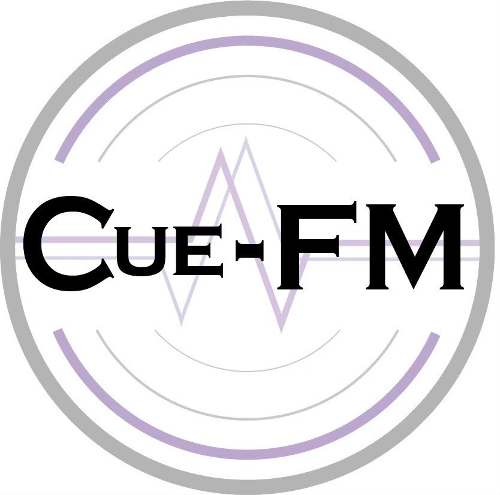
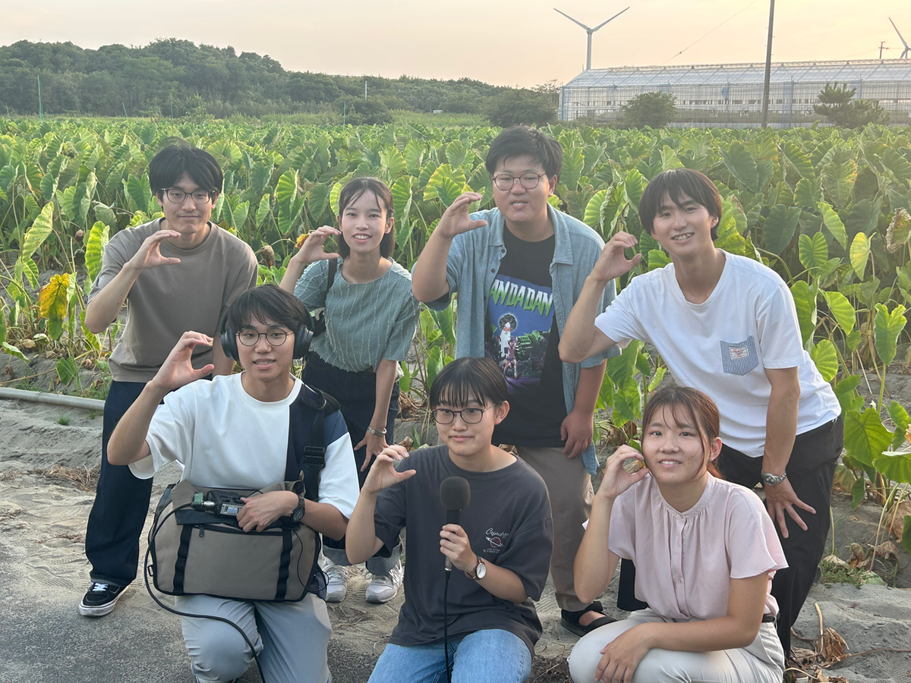
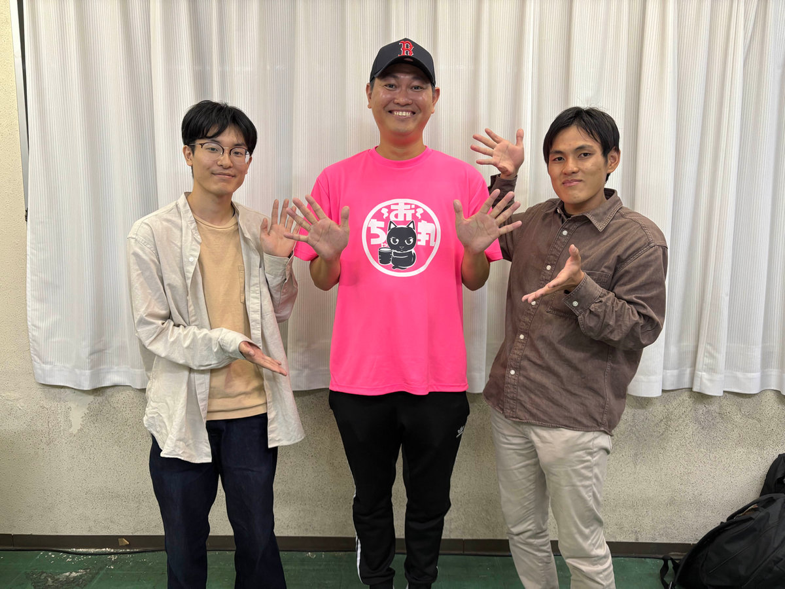
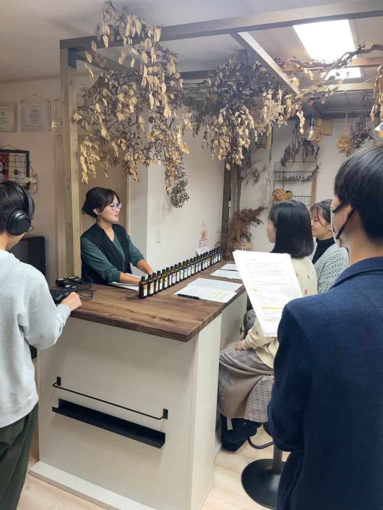
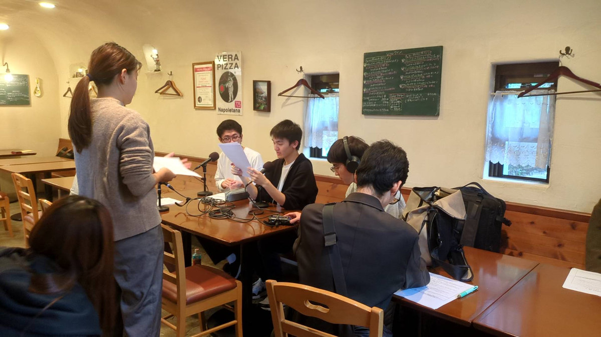
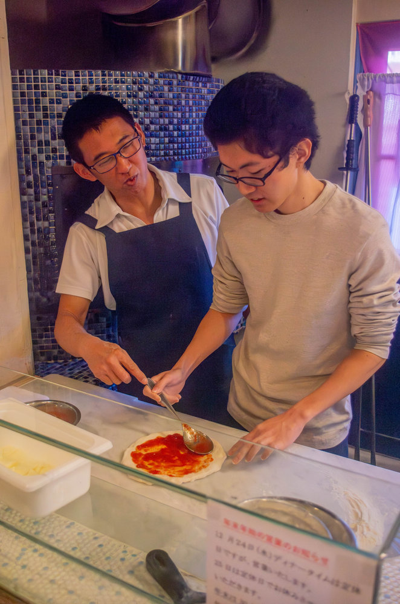

DESIGN PREVIEW
改修案 / 公式サイトはそのまま公開中

Cue-FM
静岡大学 放送研究会・浜松
わたしたち
エンカレ！
聴く
ギャラリー
おたより
見学したい！ ↗
HOME /
GALLERY
マイクの外の、ひとこま。
取材先での出会いも、活動の思い出も。

ENKARE! / MOMENT 01

ENKARE! / MOMENT 02
ENKARE! / MOMENT 03

ENKARE! / MOMENT 04

ENKARE! / MOMENT 05

ENKARE! / MOMENT 06
動く、活動アルバム。
動画を再生できない場合は
こちら
。
ENKARE! / MOVIE 01
動画を再生できない場合は
こちら
。
ENKARE! / MOVIE 02